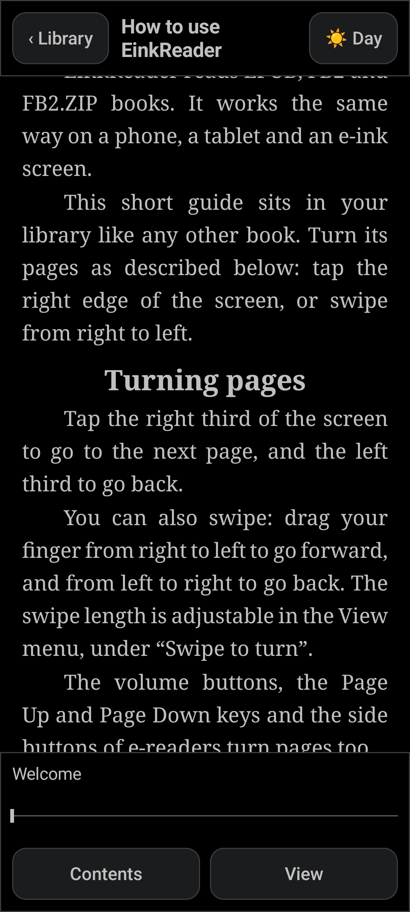
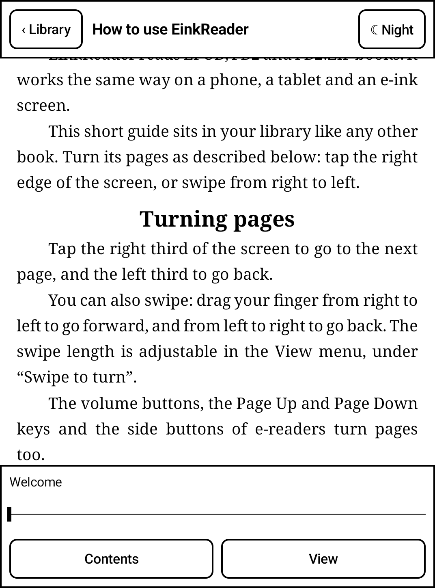
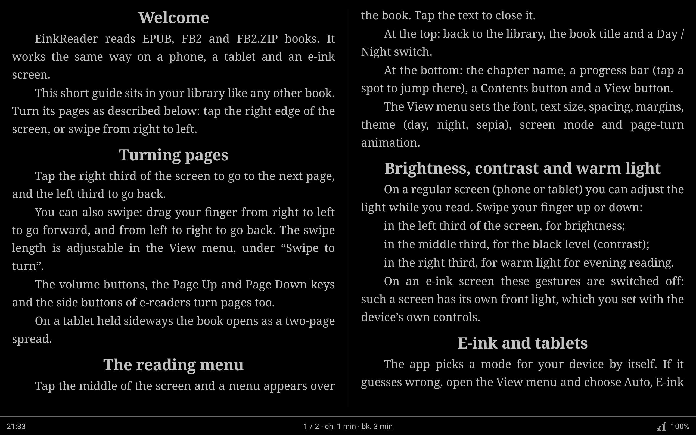

A calm e-book reader for Android
Read EPUB and FB2 books on a phone, a tablet or an e-ink screen. Free, no ads, no tracking.



What it does
- Opens EPUB, FB2 and FB2.ZIP files you add yourself. Books protected against copying are not supported.
- E-ink mode: pure black and white, no animation, tap and button paging, periodic full refresh to clear ghosting.
- Tablet mode: day, night and sepia themes, smooth page turns, two-page spread on wide screens.
- Swipes on a colour screen: brightness, black level (contrast) and warm light; fonts, size, spacing and margins are adjustable.
- Optional sync of books and reading position between your own devices through a hidden app folder in your Google Drive. It only uses the app's own data folder; other files in your Drive are not visible to the app.
- English and Russian interface; a short built-in guide opens on first launch.
Availability
EinkReader is being prepared for Google Play. The link will appear here after release.
Privacy
Your books and reading positions stay on your device. The app has no analytics and no ads. Details: privacy policy.
Support the author
The app is free. If you like it, you can support the author on Ko-fi. Nothing is locked behind it.
Спокойная читалка для Android
Читайте книги EPUB и FB2 на телефоне, планшете и экране электронных чернил. Бесплатно, без рекламы и без слежки.
Что умеет
- Открывает файлы EPUB, FB2 и FB2.ZIP, которые вы добавляете сами. Книги с защитой от копирования не поддерживаются.
- Режим E-ink: только чёрное и белое, без анимации, листание нажатием и кнопками, периодическое полное обновление экрана против остаточных следов.
- Режим планшета: темы «день», «ночь» и «сепия», плавное листание, разворот из двух страниц на широком экране.
- Свайпы на цветном экране: яркость, уровень чёрного (контраст) и тёплый свет; шрифты, размер, интервалы и поля настраиваются.
- Необязательная синхронизация книг и места чтения между вашими устройствами через скрытую папку приложения в вашем Google Диске. Приложение работает только с собственной папкой данных и не видит остальные файлы на Диске.
- Интерфейс на русском и английском; при первом запуске открывается короткое встроенное руководство.
Где скачать
EinkReader готовится к выходу в Google Play. Ссылка появится здесь после выпуска.
Конфиденциальность
Ваши книги и место чтения остаются на вашем устройстве. В приложении нет аналитики и рекламы. Подробности: политика конфиденциальности.
Поддержать автора
Приложение бесплатное. Если оно вам нравится, можно поддержать автора на Ko-fi. Ничего не блокируется и не открывается за это.